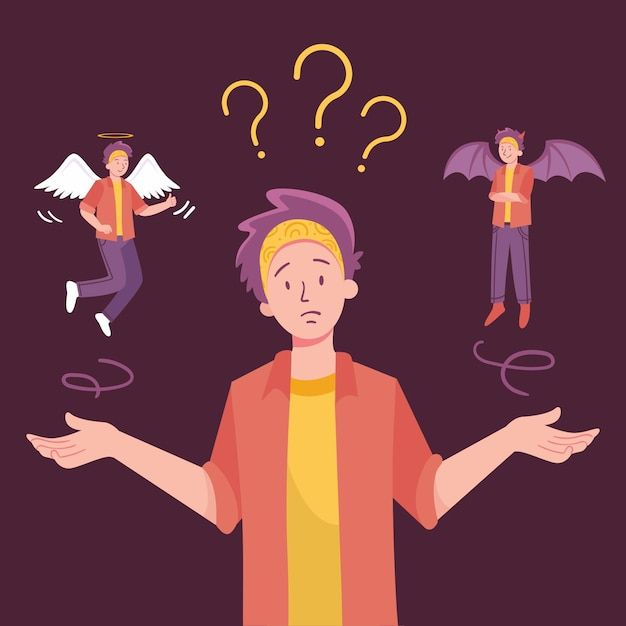

Understanding Ethical Dilemmas
According to Crowder and Turvey (2013), Ethical dilemmas are “situations where individuals
face conflicts among values, duties, rights, and obligations, requiring them to choose between
incompatible options, often resulting in a sacrifice of one duty for another”. In these cases,
one must identify the duty that ought to be acted upon when faced with competing ethical
commitments. Recognizing and addressing such conflicts is essential for responsible
decision-making, as one must carefully identify which duty or value should take precedence
when faced with competing ethical commitments. The process of resolving these dilemmas not
only shapes ethical conduct but also reinforces the moral foundations of professional and
personal integrity.
Reference:
Ethical dilemmas - an overview | ScienceDirect Topics
